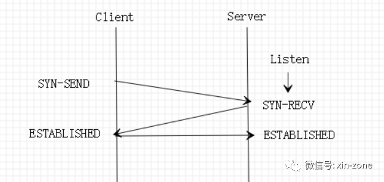
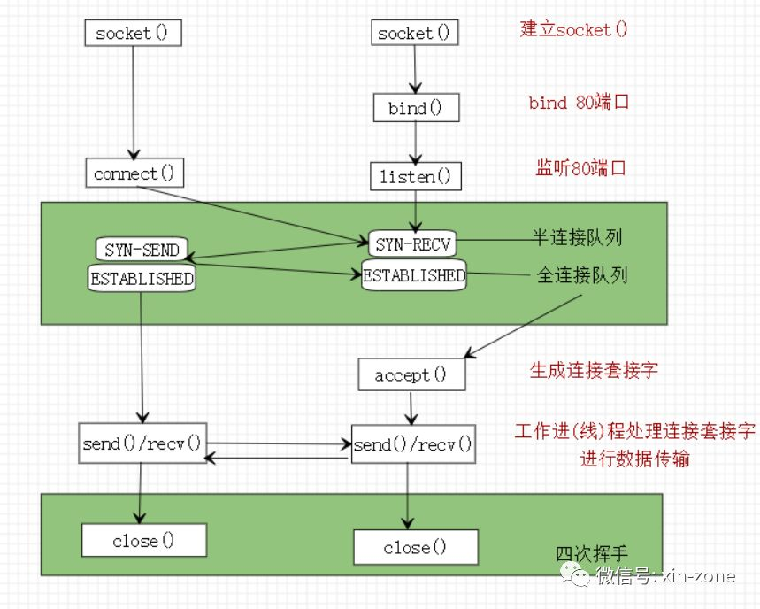

进行网络通信的时候，需要建立一个socket，这是大家都知道的。如果一个套接字只能被一个监听进(线)程监听，那么岂不是同一时刻httpd只能处理一个请求，处理完这个请求之后，释放80端口在给其他请求使用。可是显然httpd 没有那么笨，那么apache httpd 是如何支持高并发的呢?
简单的说就是有两种套接字，一种是监听套接字，供监听进(线)程监听使用。另一种是链接套接字，供传输数据使用。监听进(线)程好比丽春院里面接客的老鸨，而为客人提供弹唱服务的姑娘相当于worker模式下的工作线程。老鸨可以有一个，但是姑娘有很多。在apache httpd 的 worker模式下，每个进程会产生多个工作线程及一个监听线程。监听线程负责监听，其他工作线程负责传输数据。问题回答完了，就这么简单。
那么监听套接字跟连接套接字是如何配合工作的呢？
要回答这个问题，需要有两个背景知识做铺垫，网络编程及TCP三次握手。
背景知识1-网络编程
有过网络编程经验的同学都知道，把’大象放冰箱’一般是如下几个步骤。
- 通过
socket()函数建立监听套接字； - 通过
bind()函数绑定刚刚生成的监听套接字； - 通过
listen()函数监听刚刚生成的监听套接字； - 通过
accept()函数生成连接套接字； - 通过
recv()/send()函数利用连接套接字收发数据； - 通过
close()函数断开连接。
大家记住这几个步骤，后面用的到。现在来说TCP的三次握手过程。
背景知识2-TCP三次握手
我们经常见到的TCP三次握手过程都是这样的。
如下图：

上面这张图，只是表面现象。下面我把这张图没有体现出来的细节给各位说一说，这对回答上面的问题至关重要。
TCP的协议栈中维护着两个队列。一个是半连接队列，一个是全链接队列。
客户端发送SYN报文到服务端指定端口比如httpd的默认80端口;此时客户端的状态变为SYN-SEND；服务端收到SYN报文之后，将这个连接状态，存储到半连接队列中，同时服务端的状态变更为SYN-RECV；然后服务端立刻回一个ACK报文给客户端；客户端收到ACK之后，回给服务端一个ACK，服务端收到这个ACK之后，客户端跟服务端都变为ESTABLISHE状态；表明TCP三次握手成功。这个时候会把半连接队列中的连接，转移到全链接队列。全链接队列中的连接都是已经完成三次握手的连接。监听进(线)程监听监听套接字，就是工作在上面这个过程的。
全链接队列当中的连接都是可以用来直接进行数据传输的连接了。这个时候可以使用accept()函数，将全链接当中的连接取出来，生成连接socket，进行数据传输。传输完毕之后，经过四次挥手，关掉连接，释放资源。这就是一次完整的TCP传输过程。
俗话说的好，一图胜千言。我将上面的过程简单的画了一个流程图出来。

图中标绿的部分分别是三次握手过程跟四次挥手过程。这两个阶段发生在内核空间。
在
Linux 2.2以前，listen()函数有一个backlog的参数，用于设置这两个队列的最大总长度，从Linux 2.2开始，这个参数只表示全链接队列的最大长度，而/proc/sys/net/ipv4/tcp_max_syn_backlog则用于设置半连接队列的最大长度。/proc/sys/net/core/somaxconn则是硬限制已完成队列的最大长度，默认为128，如果backlog大于somaxconn，则backlog会被强制等于somaxconn。
回到apache httpd
prefork模式
apache httpd 的prefork模式会创建子进程处理http请求。每个子进程，即负责监听又负责处理数据。也就是说从建立三次握手到数据传输，再到四次挥手，一个子进程负责到底。如果传输的数据量比较大，同时系统高并发有比较高，那就需要建立很多子进程，对服务器的硬件资源是个不小的考验。
worker模式
worker模式是进线程混合模式，主进程会创建子进程，每个子进程会创建多个工作子线程及一个监听进程。监听进程专门负责处理监听套接字，数据传输过程交给其他工作线程。所以worker模式要比prefork模式在性能上提高不少。
event模式
event模式跟worker模式基本相同，都是进线程混合模式，不同的是，该模式还会生成一个专门处理keep-alive的线程。keep-alive虽好，但是某些情况下存在站着茅坑不拉屎的情况，这样可以把保持keep-alive的空闲连接资源进行回收。keep-alive的问题可以看我这篇文章。
结束
既然event和worker都是进线程混合模式，那么为什么event模块的性能要比worker模块的性能好很多呢?我将在下篇博文中详细说明。
推荐阅读